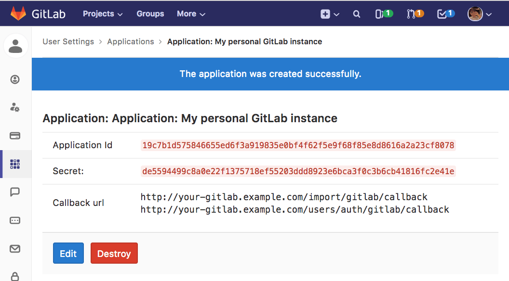

OAuth connect Gitlab (Self-hosted & Enterprise )
- Sign in to Gitlab
- Go to Settings -> Applications
- Name field - enter Application name (arbitrary)
-
Redirect URI field -> paste
https://web.timetracker.com/oauth
-
Mark `api` scope and click `Save Application` button (Application ID and
Secret key are created)

-
Paste Application ID and Secret key into corresponding fields
- Click `Login via Gitab` button